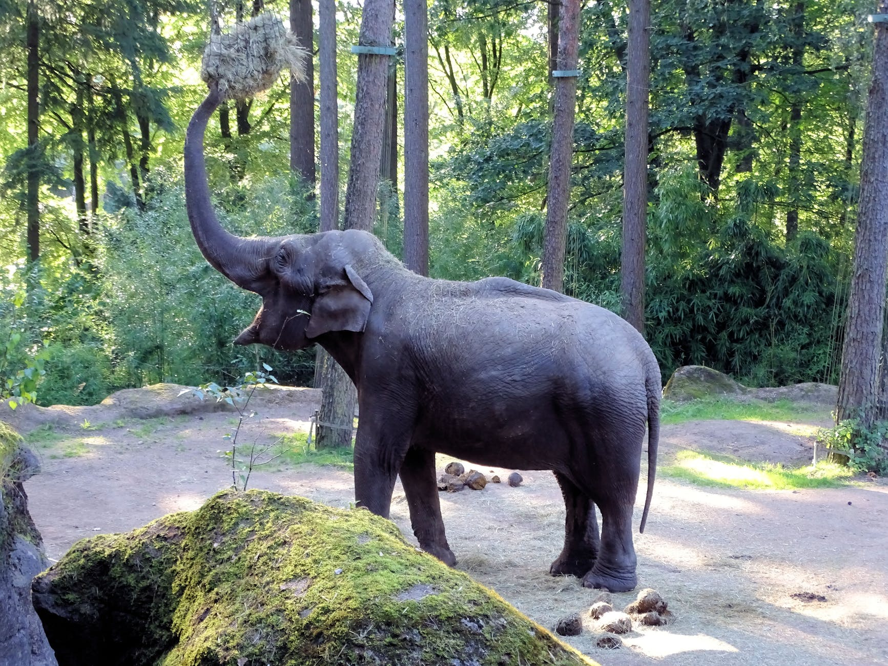

Afryka
Słoń afrykański
Jego uszy sięgają do 1,5 m długości. Służą do chłodzenia, jak wachlarze.
Trąba służy do oddychania, wąchania, picia i „kąpieli”, jak również do zbierania pożywienia i zrywania gałęzi z wyższych partii drzew.
Zęby mają 30 cm długości.
Spodnia strona stopy jest miękka i delikatna, dzięki czemu zwierzę mimo masy nawet 8 ton może poruszać się bezszelestnie.